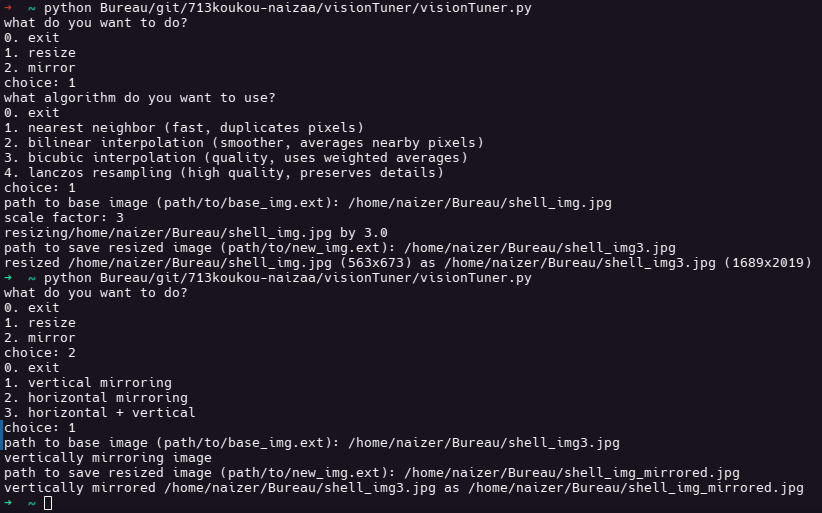

Apps desktop
Vision Tuner


Description
Vision Tuner est un outil terminal Python que je développe pour apprendre le traitement d'images. Le but du programme est de permettre aux utilisateurs de modifier des images via des algorithmes de traitement d'images fait-main (interpolation nearest neighbor/bilinéaire, etc.)
